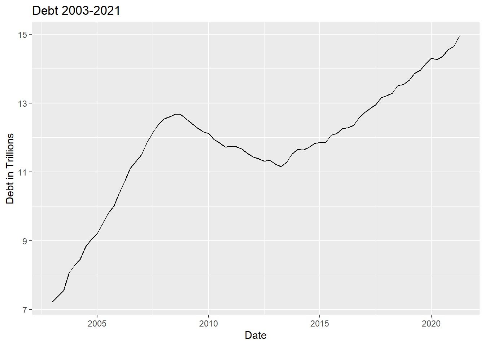
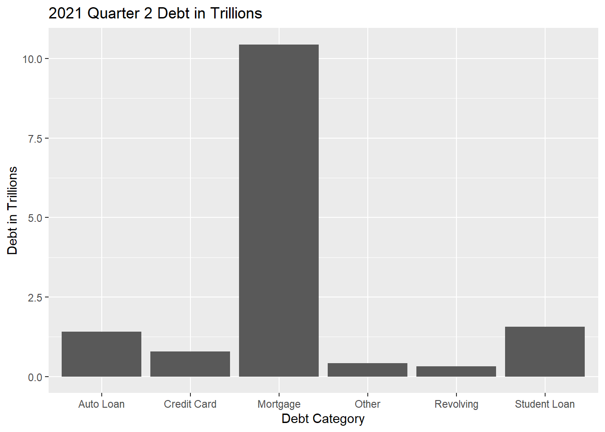

library(tidyverse)
library(ggplot2)
library(readxl)
library(lubridate)
knitr::opts_chunk$set(echo = TRUE, warning=FALSE, message=FALSE)Challenge 6 Emma Rasmussen
challenge_6
debt
Visualizing Time and Relationships
Read in data
debt<-read_excel("_data/debt_in_trillions.xlsx")
debt# A tibble: 74 × 8
`Year and Quarter` Mortgage HE Revolvin…¹ Auto …² Credi…³ Stude…⁴ Other Total
<chr> <dbl> <dbl> <dbl> <dbl> <dbl> <dbl> <dbl>
1 03:Q1 4.94 0.242 0.641 0.688 0.241 0.478 7.23
2 03:Q2 5.08 0.26 0.622 0.693 0.243 0.486 7.38
3 03:Q3 5.18 0.269 0.684 0.693 0.249 0.477 7.56
4 03:Q4 5.66 0.302 0.704 0.698 0.253 0.449 8.07
5 04:Q1 5.84 0.328 0.72 0.695 0.260 0.446 8.29
6 04:Q2 5.97 0.367 0.743 0.697 0.263 0.423 8.46
7 04:Q3 6.21 0.426 0.751 0.706 0.33 0.41 8.83
8 04:Q4 6.36 0.468 0.728 0.717 0.346 0.423 9.04
9 05:Q1 6.51 0.502 0.725 0.71 0.364 0.394 9.21
10 05:Q2 6.70 0.528 0.774 0.717 0.374 0.402 9.49
# … with 64 more rows, and abbreviated variable names ¹`HE Revolving`,
# ²`Auto Loan`, ³`Credit Card`, ⁴`Student Loan`
# ℹ Use `print(n = ...)` to see more rowsdebtOrig<-debtBriefly describe the data
This data represents debt in trillions over time, broken down by particular categories (ex: mortgage, student loans, credit card debt etc). Assume this is some amalgamation of debt owed by Americans but I could not find the original data source (again I know nothing about economics).
print(summarytools::dfSummary(debt,
varnumbers = FALSE,
plain.ascii = FALSE,
style = "grid",
graph.magnif = 0.8,
valid.col = FALSE),
method = 'render',
table.classes = 'table-condensed')Data Frame Summary
debt
Dimensions: 74 x 8Duplicates: 0
| Variable | Stats / Values | Freqs (% of Valid) | Graph | Missing | |||||||||||||||||||||||||||||||||||||||||||||||||||||||
|---|---|---|---|---|---|---|---|---|---|---|---|---|---|---|---|---|---|---|---|---|---|---|---|---|---|---|---|---|---|---|---|---|---|---|---|---|---|---|---|---|---|---|---|---|---|---|---|---|---|---|---|---|---|---|---|---|---|---|---|
| Year and Quarter [character] |
|
|
 |
0 (0.0%) | |||||||||||||||||||||||||||||||||||||||||||||||||||||||
| Mortgage [numeric] |
|
74 distinct values |  |
0 (0.0%) | |||||||||||||||||||||||||||||||||||||||||||||||||||||||
| HE Revolving [numeric] |
|
73 distinct values |  |
0 (0.0%) | |||||||||||||||||||||||||||||||||||||||||||||||||||||||
| Auto Loan [numeric] |
|
71 distinct values |  |
0 (0.0%) | |||||||||||||||||||||||||||||||||||||||||||||||||||||||
| Credit Card [numeric] |
|
69 distinct values |  |
0 (0.0%) | |||||||||||||||||||||||||||||||||||||||||||||||||||||||
| Student Loan [numeric] |
|
73 distinct values |  |
0 (0.0%) | |||||||||||||||||||||||||||||||||||||||||||||||||||||||
| Other [numeric] |
|
70 distinct values |  |
0 (0.0%) | |||||||||||||||||||||||||||||||||||||||||||||||||||||||
| Total [numeric] |
|
74 distinct values |  |
0 (0.0%) |
Generated by summarytools 1.0.1 (R version 4.2.1)
2022-08-25
Tidy Data (as needed)
#fixing date variable
debtNEW<-debt%>%
mutate(YearQuarter=parse_date_time(`Year and Quarter`,
orders="yq"))
debtNEW# A tibble: 74 × 9
`Year and Quarter` Mortgage HE Revolvin…¹ Auto …² Credi…³ Stude…⁴ Other Total
<chr> <dbl> <dbl> <dbl> <dbl> <dbl> <dbl> <dbl>
1 03:Q1 4.94 0.242 0.641 0.688 0.241 0.478 7.23
2 03:Q2 5.08 0.26 0.622 0.693 0.243 0.486 7.38
3 03:Q3 5.18 0.269 0.684 0.693 0.249 0.477 7.56
4 03:Q4 5.66 0.302 0.704 0.698 0.253 0.449 8.07
5 04:Q1 5.84 0.328 0.72 0.695 0.260 0.446 8.29
6 04:Q2 5.97 0.367 0.743 0.697 0.263 0.423 8.46
7 04:Q3 6.21 0.426 0.751 0.706 0.33 0.41 8.83
8 04:Q4 6.36 0.468 0.728 0.717 0.346 0.423 9.04
9 05:Q1 6.51 0.502 0.725 0.71 0.364 0.394 9.21
10 05:Q2 6.70 0.528 0.774 0.717 0.374 0.402 9.49
# … with 64 more rows, 1 more variable: YearQuarter <dttm>, and abbreviated
# variable names ¹`HE Revolving`, ²`Auto Loan`, ³`Credit Card`,
# ⁴`Student Loan`
# ℹ Use `print(n = ...)` to see more rows, and `colnames()` to see all variable names#pivoting debt categories
debtNEWPIVOT<-pivot_longer(debtNEW, c("Mortgage", "HE Revolving", "Auto Loan", "Credit Card", "Student Loan", "Other"),
names_to="DebtCategory", values_to="DebtByCategory")
debtNEWPIVOT# A tibble: 444 × 5
`Year and Quarter` Total YearQuarter DebtCategory DebtByCategory
<chr> <dbl> <dttm> <chr> <dbl>
1 03:Q1 7.23 2003-01-01 00:00:00 Mortgage 4.94
2 03:Q1 7.23 2003-01-01 00:00:00 HE Revolving 0.242
3 03:Q1 7.23 2003-01-01 00:00:00 Auto Loan 0.641
4 03:Q1 7.23 2003-01-01 00:00:00 Credit Card 0.688
5 03:Q1 7.23 2003-01-01 00:00:00 Student Loan 0.241
6 03:Q1 7.23 2003-01-01 00:00:00 Other 0.478
7 03:Q2 7.38 2003-04-01 00:00:00 Mortgage 5.08
8 03:Q2 7.38 2003-04-01 00:00:00 HE Revolving 0.26
9 03:Q2 7.38 2003-04-01 00:00:00 Auto Loan 0.622
10 03:Q2 7.38 2003-04-01 00:00:00 Credit Card 0.693
# … with 434 more rows
# ℹ Use `print(n = ...)` to see more rows#selecting for 2021 row only. I used tail() because filter was not working for me.
debt2021<-tail(debtNEWPIVOT, n=6)
debt2021# A tibble: 6 × 5
`Year and Quarter` Total YearQuarter DebtCategory DebtByCategory
<chr> <dbl> <dttm> <chr> <dbl>
1 21:Q2 15.0 2021-04-01 00:00:00 Mortgage 10.4
2 21:Q2 15.0 2021-04-01 00:00:00 HE Revolving 0.322
3 21:Q2 15.0 2021-04-01 00:00:00 Auto Loan 1.42
4 21:Q2 15.0 2021-04-01 00:00:00 Credit Card 0.787
5 21:Q2 15.0 2021-04-01 00:00:00 Student Loan 1.57
6 21:Q2 15.0 2021-04-01 00:00:00 Other 0.421#data frame with 2 variables debt category and debt in trillions for 2021.
select(debt2021, 4, 5)# A tibble: 6 × 2
DebtCategory DebtByCategory
<chr> <dbl>
1 Mortgage 10.4
2 HE Revolving 0.322
3 Auto Loan 1.42
4 Credit Card 0.787
5 Student Loan 1.57
6 Other 0.421#creating a new df of my select manually. debt2021 did not work with gg plot so i created a data frame by type in the values which doesn't feel right. Then the graph worked though. I feel like this code is very inefficient
debt2021df <- data.frame(
name=c("Mortgage","Revolving","Auto Loan","Credit Card","Student Loan", "Other") ,
value=c(10.442, 0.322, 1.415, 0.787, 1.570, 0.421)
)
debt2021df name value
1 Mortgage 10.442
2 Revolving 0.322
3 Auto Loan 1.415
4 Credit Card 0.787
5 Student Loan 1.570
6 Other 0.421Time Dependent Visualization
ggplot(debtNEW, aes(YearQuarter, Total))+geom_line()+
labs(x="Date", y="Debt in Trillions", title="Debt 2003-2021")
I chose a line graph to help visualize change over time. Easier to visualize increase and deacrease in debt over the date variable ## Visualizing Part-Whole Relationships
#Creating bar graph to transform into pie chart
ggplot(debt2021df, aes(x=name, y=value)) +
geom_bar(stat = "identity")+
labs(x="Debt Category", y="Debt in Trillions", title= "2021 Quarter 2 Debt in Trillions")
#trying to create pie chart
ggplot(debt2021df, aes(x=name, y=value)) +
geom_bar(stat = "identity")+
labs(x="Debt Category", y="Debt in Trillions", title= "2021 Quarter 2 Debt in Trillions")+
coord_polar()#I don't know what happened. I need help. I was trying to make a simple pie chartI chose a pie chart (what was meant to be a pie chart) to help visualize proportion of debt (Bar graph was just precursor to make pie chart with ggplot). I think this paints a clearer picture than a bar graph of how debt falls proportionally by category.